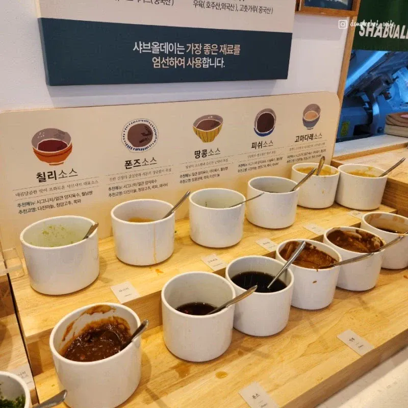
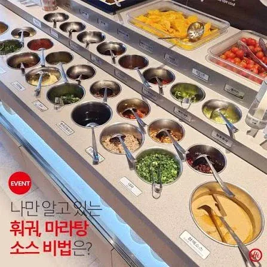
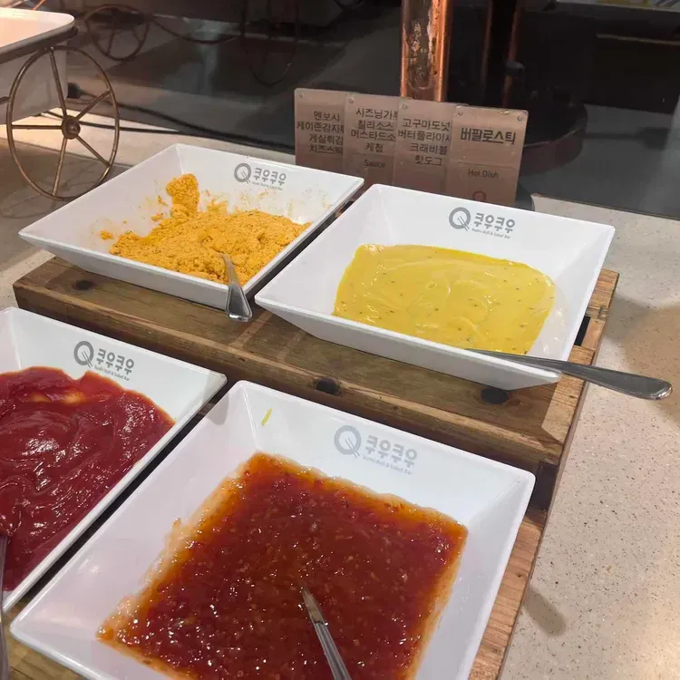
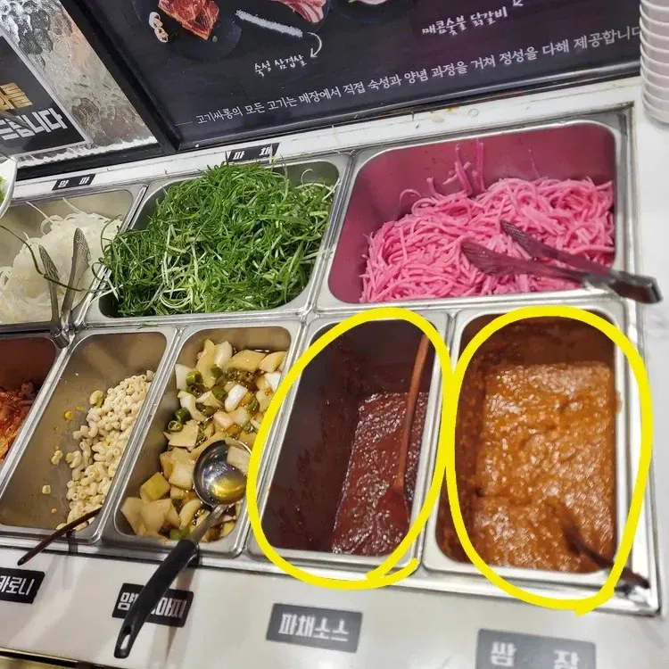
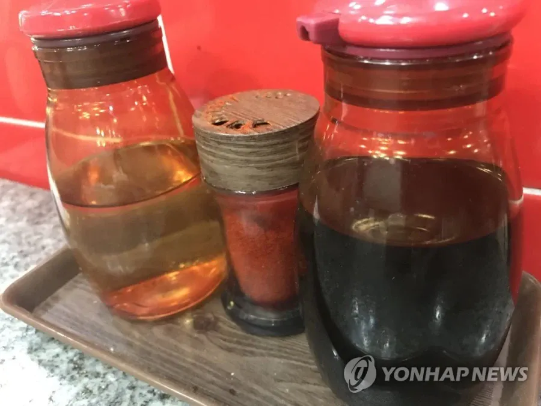
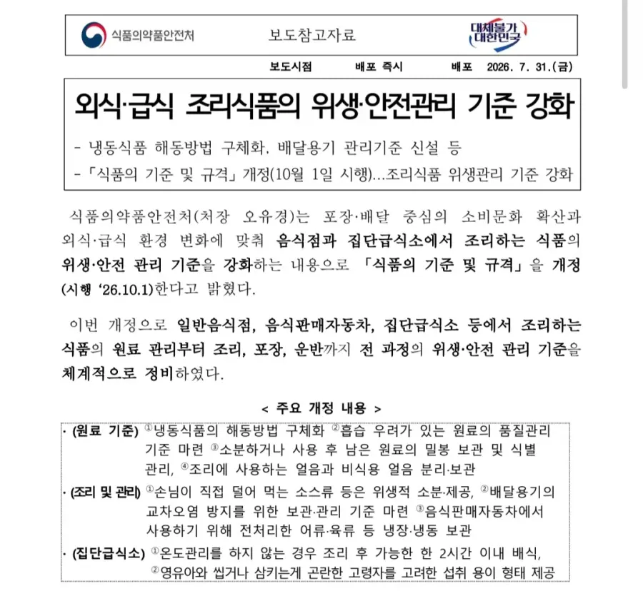
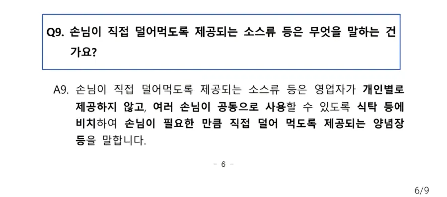
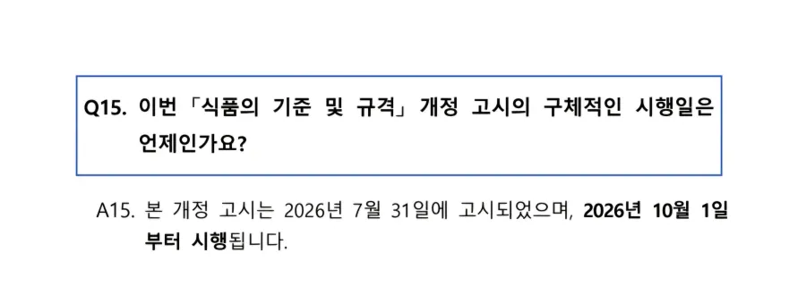

식당 테이블마다 놓여진 간장, 식초, 각종소스류
고기집 셀프바 쌈장, 파채소스, 양파소스, 와사비 등등
전부 싹다 시행령 위반됨

여기에 걸리는게 일단 국밥집 다진양념(aka 다대기) 간장 식초 초장 새우젓이 해당사항임
셀프바에 배치하는것도 식탁"등"으로 그냥 공용이용자체를 못하게됨
시행첫날이라서 조용한데, 어디 보건소에서 먼저 터트리는걸 기다리는건지 아니면 진짜 보도자료배포가 3달전이라서 까먹은건지는 몰루?
아 조미료(소금,후추,설탕) 반찬은 해당내용에 없음

오늘부터 계도기간도 아니고 시행임
이거 추진한 새끼들 전부 목매달아 죽여야함.
샤브샤브집 소스코너 없어지기만해봐.
말도 안되는 법을 또 만들었네